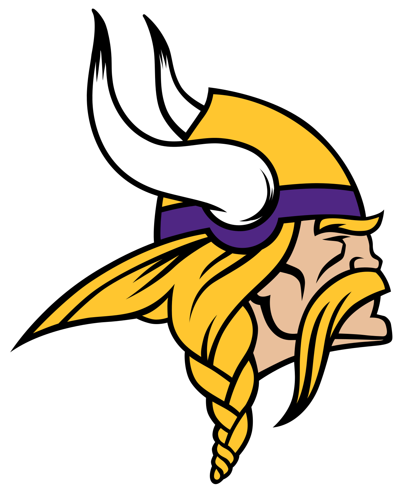
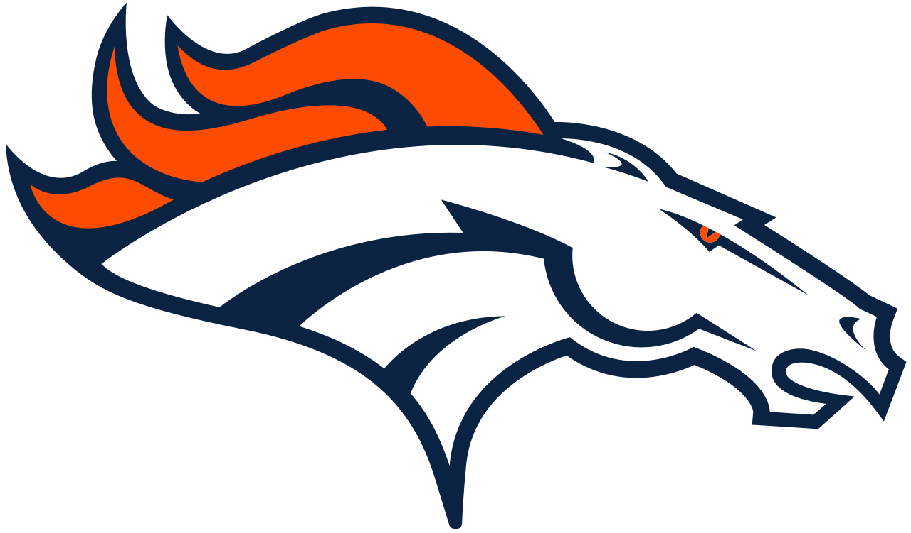
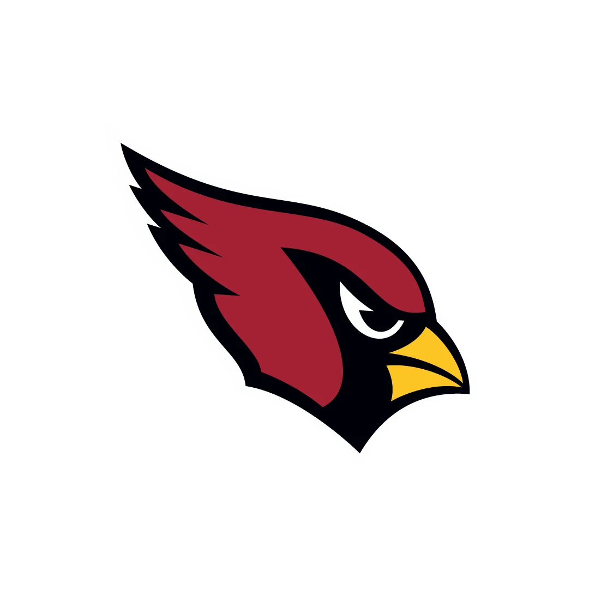
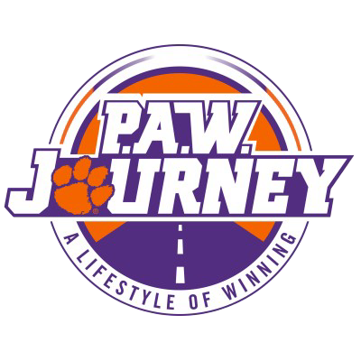
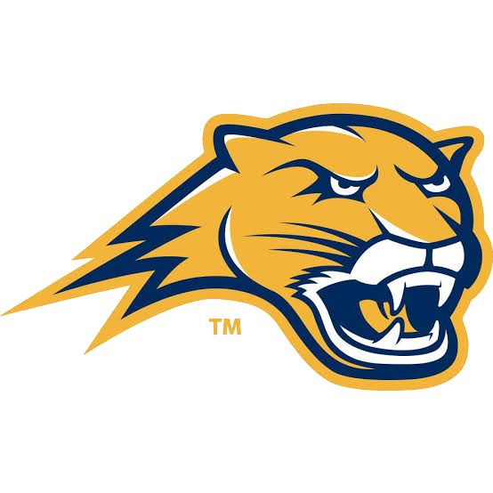
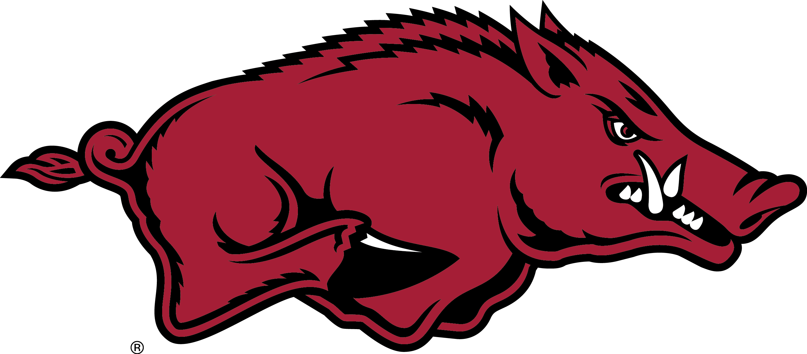
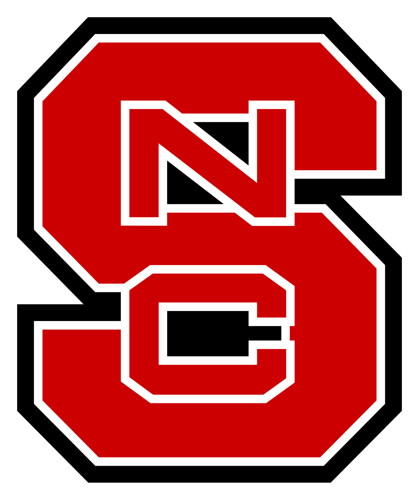
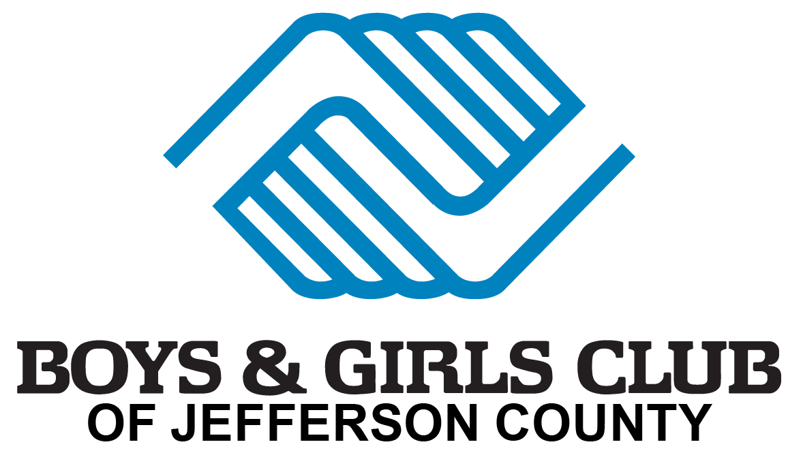

High permance shouldn't require hiding.
Fernando Velasco helps high performers take off the masks created by pressure, performance, and expectation so they can lead, live, and perform without losing themselves in the process.









We're really good at looking fine.
High performers know how to show up.
We produce. We lead. We compete. We take care of everybody else. We keep moving.
And somewhere along the way, we can get so good at performing that nobody knows what we are carrying underneath it. Sometimes we do not know either.
That is the conversation Fernando brings into the room.
Not how to stop performing. How to perform without losing yourself.
We all wear masks.

Fernando spent nine years playing in the NFL and the next decade working with elite athletes and leaders. He knew how to perform. He knew how to push through. He knew how to look okay.
But one question changed the way he saw everything:
“Fernando, how are you doing?”
For the first time, he answered honestly.
That moment became part of a much bigger journey. Fernando has also lived through a Bipolar I diagnosis, hospitalization, major career transitions, and seasons when the outside picture did not match what was happening inside.
Those experiences did not make him stop believing in high performance. They changed the way he understood it.
He learned that taking off your mask is not a one-time decision. It is a daily practice. And high performers need more than motivation to do it. They need language, relationships, systems, and a strong sense of identity.
The M.A.S.K. Framework
A practical framework for high performers who want to succeed without hiding behind their success.
Meet Your Truth
Get honest about what is really happening beneath the role, image, or performance.
Ask for Help
Learn to see asking for help as strength, not weakness.
Systems Save Lives
Build the routines, relationships, and support systems that can hold you up when pressure gets heavy.
Know Your Identity
Know who you are beyond your position, title, jersey, achievement, or expectation.
The M.A.S.K.
High Performance Without Hiding
High performers learn early how to push through, produce, and keep moving. What they are not always taught is what to do with everything they are carrying underneath the performance.
Fernando Velasco knows that tension personally. In this deeply human and practical keynote, he combines lessons from nine years in the NFL, a decade supporting athletes and leaders, and his own experience learning to take off the mask.
Through the M.A.S.K. framework, audiences learn how truth, asking for help, strong systems, and identity can create a healthier way to perform at a high level.
This is not about lowering the standard. It is about making sure the person carrying the standard does not disappear underneath it.
Audiences Leave Better Equipped To:
- Recognize when performance has become a place to hide.
- Meet their truth before pressure turns into isolation.
- Ask for help without seeing it as weakness.
- Build stronger personal and professional support systems.
- Separate who they are from what they accomplish.
- Lead and perform from a more grounded sense of identity.
Built for high-pressure environments.
Fernando speaks to people who know what it feels like to have expectations on them.
Corporate Leaders & Teams
For organizations where performance is high, pressure is real, and people need permission to be human without lowering the standard.
Professional & Collegiate Athletes
For athletes navigating identity, expectations, transition, and life beyond the game.
Universities & Emerging Leaders
For students learning how ambition, identity, relationships, and mental wellness affect the person they are becoming.
He's lived both sides of high performance

Fernando did not leave football and immediately started telling people how to live.
He spent nine years inside NFL locker rooms. Then he spent years working behind the scenes helping college and professional athletes navigate pressure, transition, identity, and life beyond the game.
Eventually, his own life forced him to confront many of those same questions.
That combination shapes the way he speaks today: lived experience, years of work with high performers, and continued study of leadership, adult learning, and human development.
Not from a textbook alone. Not from a football field alone. From experience, study, and years spent sitting across from high performers when the cameras were not around.
Don't just take Fernando's word for it.
"Anytime you are talking about revealing yourself and taking off your mask, it really hits home and makes an impact on our entire team!"
Morris ButlerCo-President | Butler Automotive Group"I want to say thank you to Fernando for helping bring awareness to these topics, but also making impact."
Josh MarrinerDirector of Player Engagement | Arizona Cardinals"Helping other people claim the potential they have in themselves."
Tim BaucomChief Executive Officer & President | Shaw IndustriesSee Fernando speak
What are your people carrying?
You do not have to wait until somebody is struggling publicly to start having better conversations privately.
Bring Fernando into your organization for a keynote that challenges high performers to look beyond the performance, strengthen the systems around them, and remember who they are underneath everything they do.
Speaking Inquiries • Keynotes • Leadership Programs • Team Experiences